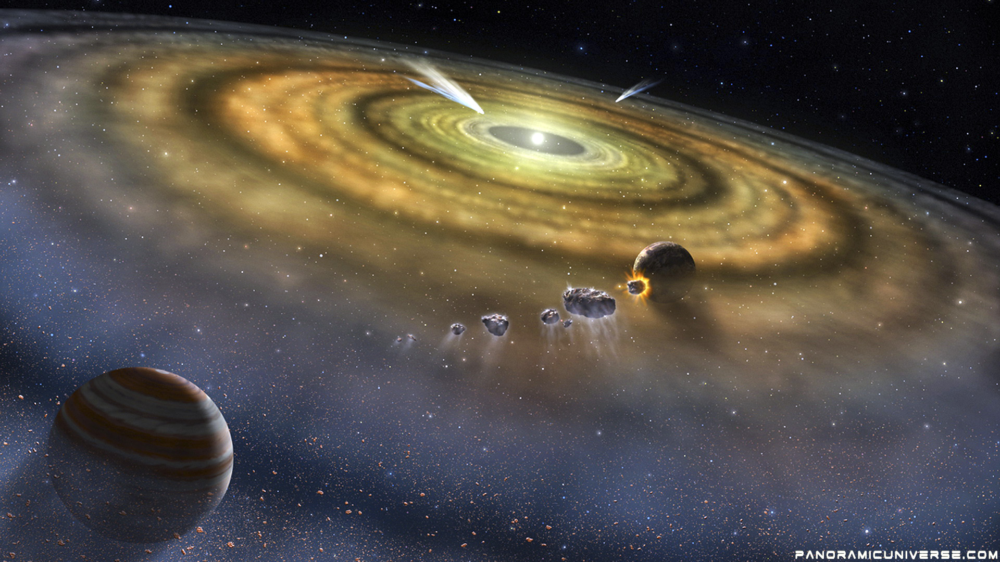

FORMAÇÃO DO SISTEMA SOLAR
O Sistema Solar é constituído pelo Sol e por um conjunto de objetos astronômicos que se ligam a ele através da gravidade. Acredita-se que esses corpos tenham sido formados por meio de um colapso de uma nuvem molecular gigante há 4,6 bilhões de anos atrás. Entre os muitos corpos que orbitam ao redor do Sol, a maior parte da massa está contida dentro de oito planetas, cujas órbitas são quase circulares e se encontram dentro de um disco quase plano, denominado de “plano da eclíptica”. Os quatro menores planetas (Mercúrio, Vênus, Terra e Marte) são conhecidos como planetas telúricos ou sólidos, encontram-se mais próximos do Sol e são compostos principalmente de metais e rochas. Os quatro maiores planetas (Júpiter, Saturno, Urano e Netuno) encontram-se mais distantes do Sol e concentram mais massa do que os planetas telúricos, sendo também chamados de planetas gasosos. Os dois maiores, Júpiter e Saturno, são compostos em sua maior parte de hidrogênio e hélio. Urano e Netuno, conhecidos também como “planetas ultra periféricos”, são cobertos de gelo, sendo às vezes referidos como “gigantes de gelo”, apresentando também em suas composições água, amônia, metano, etc. O Sistema Solar também é o lar de outras duas regiões povoadas por objetos menores. O cinturão de asteroides está situado entre Marte e Júpiter e sua composição se assemelha à dos planetas sólidos. Além da órbita de Netuno encontram-se os objetos transnetunianos, com uma composição semelhante a dos planetas gasosos. Dentro destas duas regiões, existem outros cinco corpos individuais. São eles: Ceres, Plutão, Haumea, Makemake e Éris, denominados de planetas anões. Além de milhares de corpos pequenos nestas duas regiões, vários outros pequenos objetos viajam livremente entre as regiões, como cometas e centauros, que são corpos menores do sistema solar. Para uma noção da dimensão astronômica das distâncias no espaço devem-se fazer cálculos e usar um modelo que permita uma percepção mais clara do que está em jogo. Por exemplo, um modelo reduzido em que o Sol estaria representado por uma bola de futebol (de 22 cm de diâmetro). A essa escala, a Terra ficaria a 23,6 metros de distância e seria uma esfera com apenas 2 mm de diâmetro (a Lua ficaria a uns 5 cm da Terra, e teria um diâmetro de uns 0,5 mm). Júpiter e Saturno teriam cerca de 2 cm de diâmetro, respectivamente a 123 e a 226 metros do Sol. Plutão ficaria a 931 metros do Sol, com cerca de 0,36 mm de diâmetro. Quanto à estrela mais próxima, a Próxima Centauro, essa estaria a 6 332 km do Sol, enquanto a estrela Sírio a 13 150 km. Se o tempo de uma viagem da Terra à Lua, a cerca de 257 000 km/hora, fosse de uma hora e um quarto, levaria cerca de três semanas terrestres para se ir da Terra ao Sol, 3 meses se ir a Júpiter, sete meses para Saturno e cerca de dois anos e meio para chegar a Plutão e deixar o nosso sistema solar. A partir daí, a essa velocidade, levaria 17 600 anos até chegar à estrela mais próxima, e 35 000 anos até Sírio.